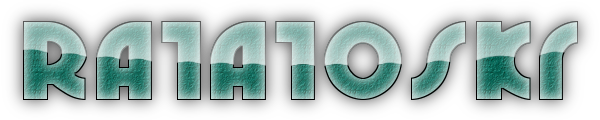
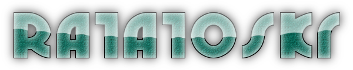

は、パソコンに接続できる様々なデバイスと通信を行うことができる開発支援ツールです。
シリアルポートやTCP/UDP等の様々な通信ポートに対して、汎用的な通信デバッグ環境を提供します。
見やすいパケットビューや、操作性を重視したインターフェースにより、ポートへの入出力を直感的に操作することができます。
には以下の特徴があります。

GPL3 (GNU GENERAL PUBLIC LICENSE v3)
.NET Framworkをインストールした後に、任意のフォルダに解凍して実行してください。
一部の機能を使用するときは他ソフトウェアが必要になります。
| 機能 | 必要ソフトウェア |
|---|---|
| USB Monitor | USBPcap (http://desowin.org/usbpcap/) |
| Ehernet | WinPcap (https://www.winpcap.org/) |
はレジストリを使用しません。
インストールで解凍したファイルを削除した後に、設定ファイルを削除してください。 設定ファイルは以下の場所に存在します。
%APPDATA%\